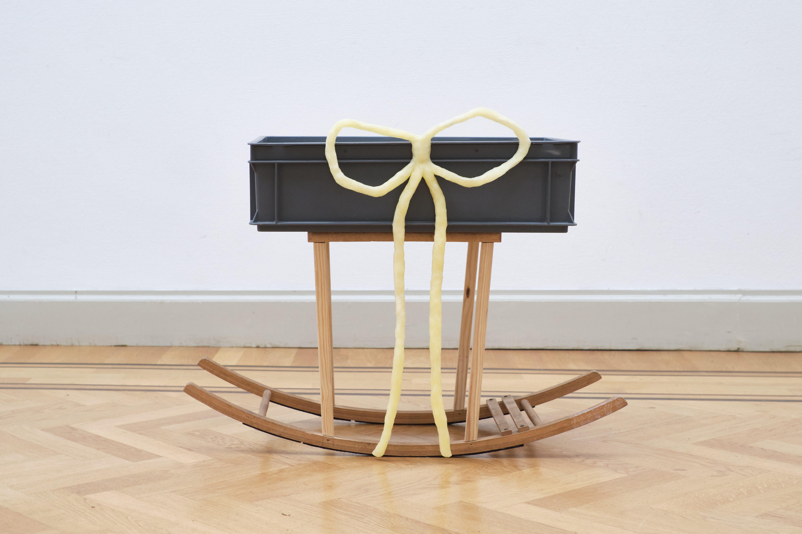

Fish breath, 2025
The Fish (on a walk), 2025
Films created while on residency in Lisbon, Portugal.I went to the grocery store in the morning and bought this dead fish. I hadn’t bought an animal product in ten years, so my heart was racing. I told the woman at the fish stall I needed it in its entirety. She was confused and tried to persuade me not to. She began to cut off the fins anyway and I had to tell her no, no, please keep them. She handed me the fish wrapped up in its plastic bag with an uneasy look on her face. She tried to ask me what I was going to do with it but I couldn’t explain in Portuguese that I was going to make it my baby.
I ask; what does it take for humans to have empathy for a fish? If it is dressed it like a human baby, can we care for it?
The Fish (crib), 2025
The crib, made out of a crate used at a fish market, is filled with wet ice cubes. The body inside it is missing but the crib serves as a cradle, or a coffin, for those fish that were scooped up from the sea. Sculpture created in combination with two presented video works.Photographed by Hannah Schleifer.

